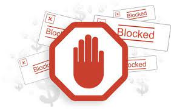
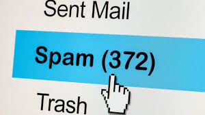

El spam puede definirse como mensajes no deseados que se envían principalmente por vía electrónica. Se entregan sin haber sido solicitados por el destinatario, y suele ser publicidad. Hay varios tipos de spam, como el spam de correo electrónico o el spam en las redes sociales.
¿Comó identificar el spam?
La forma más sencilla de determinar si un mensaje es spam es cuando el mensaje contiene
una oferta demasiado buena para ser cierta, por ejemplo, la oportunidad de ganar grandes sumas de dinero por hacer prácticamente nada.
En páginas web seria que nos lance informacion agena al contexto de la pagina por ejemplo en las noticias, quiero saber lo
que esta pasando pero no quiero que me muestren publicidad de bebidas ni de conciertos.
¿Comó evitar el SPAM?
Para evitar el SPAM en paginas web la manera mas facil seria instalando un adblocker(AdBlock es una extensión de los navegadores web que bloquea la exhibición de anuncios a los usuarios de Internet).
En caso de recibir constante SPAM en su correo electronico usted deberia de utilizar la función de denuncia de spam de su cliente de correo electrónico. Los proveedores más populares de correo electrónico ofrecen un botón útil para poder denunciar un mensaje como spam. Al hacerlo, puede «entrenar» a su correo electrónico para que detecte mejor el spam. Cualquier mensaje detectado de este modo se envía directamente a su carpeta de spam, sin pasar por el buzón de entrada. Si su correo no detecta automáticamente los mensajes de spam y phishing, asegurese de buscar en las opciones del navegador.